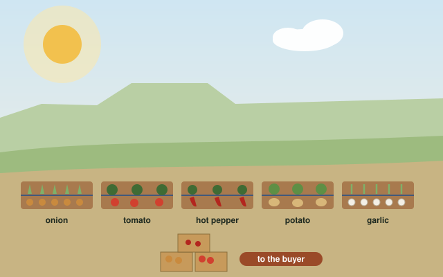
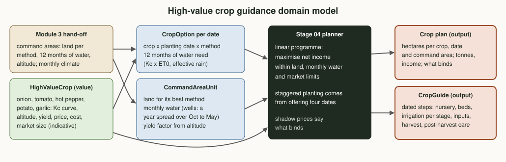

Plan · Phase 1 · Module 4High-value crop guidance
The last module of Phase 1. Module 3 found the irrigable command areas and their water; this module chooses which high-value crops to grow on them, when to plant each, and gives a dated production guide for every recommended crop.
Where this sits in Phase 1
The last step of the chain the professor set out: land, then water, then where they meet for irrigation, then what to grow there. This module reads module 3's hand-off and uses the stage 04 planner that already balances land, monthly water and markets.
Why high-value crops, and why a plan
Analogy: modules 1 to 3 found the kitchen and the ingredients; this module writes the menu and a recipe card for each dish. Dry-season water is scarce, so every cubic metre should earn as much as it can. Vegetables and spices earn several times more per hectare than irrigated cereals, but each market is limited and each crop peaks in a different month.
Mix beats one crop
Onion alone would saturate its market at about 200 ha. A mix of five crops earns 2.4 times as much from the same command areas.
Stagger the planting
Crops planted from October to January peak in different months, so the same water serves more land: 28% more income than planting everything in mid-November.
Then markets bind
With staggering, the water stretches until buyers are the limit: every crop reaches its market cap, which points straight to stage 05.
Domain model
Each crop is offered at four planting dates under each irrigation method, with twelve months of water need. Each command area brings its land, its monthly water and its altitude. The stage 04 planner chooses the hectares; a guide is written for every crop it recommends.

The five crops
Indicative profiles. Crop coefficients and stage lengths follow FAO-56; yields, prices, costs and market sizes are synthetic placeholders until stage 05 provides market data.
| Crop | Days in field | Best altitude (m) | Yield (t/ha) | Price (birr/t) | Net margin (birr/ha) | Market (t) |
|---|
Methods
Water need per crop and date
Daily crop water use is the crop coefficient (FAO-56 curve) times reference evapotranspiration, added up per month, minus effective rain (USDA-SCS), divided by the method's efficiency: the same steps as the stage 02 budget, using the climate that comes with the module 3 hand-off.
Command areas as planning units
Each command area offers the land suitable for its best method and its water month by month. Shallow wells use storage: a year's sustainable recharge is spread over October to May. Altitude gives a yield factor: 1.0 in a crop's best band, 0.7 in its acceptable band, 0 outside.
The planner
The stage 04 linear programme maximises expected net income within land, twelve monthly water limits per command area and market limits per crop. Offering four planting dates lets it stagger planting by itself.
Guides
For every recommended crop, a dated guide at its main planting date: nursery, bed preparation, irrigation per growth stage (mm per week), fertilizer, scouting, harvest and post-harvest care.
Amhara-specific considerations
Onion and garlic
Irrigated onion is already a common dry-season crop in Amhara's valleys; cured bulbs and garlic store for months, so they suit farmers far from markets.
Hot pepper
Pepper for berbere is in demand across Ethiopia; dried red pepper keeps and travels well, which matters on roads that close in the rains.
Potato in the highlands
Potato fits the cooler, higher command areas; clean seed tubers and diffuse-light stores are the main constraints.
Tomato needs a buyer first
Tomato is perishable: it should be planted only with a buyer and transport arranged (stages 05 and 11), and harvested into crates.
Demo on module 3's command areas
Eleven command areas from module 3 with 7,906 ha suitable for their best method (drip in every case), five crops at four planting dates. Synthetic data and prices; not advice for real fields.
What to plant, and when
Hectares by crop and planting month.
What mixing and staggering are worth
Expected net income, million birr.
Water use in the largest command area
Monthly water used by each crop (stacked) against the sustainable supply of the basin (line).
| Command area | Suitable (ha) | Planted (ha) | Crops (planting month, ha) |
|---|
Production guides
A dated recipe card for each recommended crop at its main planting date, with drip irrigation. Templates to adapt with development agents and research partners.
Try it: water and money for one plot
The same water calculation as water_need_m3_ha() and the same synthetic economics. Compare the plot's peak-month need with what a stream gives.
Output: the crop plan
Per command area: crops, planting dates and hectares; per crop: tonnes and the guide. The full output is assets/demo-high-value.json; stage 06 (inputs) and stage 07 (field operations) read the plan and the guides.
Phase 1 is complete: what comes next
Validate with real data
Replace the synthetic layers of all four modules with the pilot woreda's data, field checks and agreed thresholds, module by module, in the same order.
Markets
Replace the synthetic prices and market limits with stage 05 contracts and market studies: the plan says markets are now the binding limit.
Demonstration plots
Test the guides on demonstration plots with development agents (stage 07) before any recommendation reaches farmers.
Code on this branch
src/crop_plan/high_value.py crop profiles, water need per date and method, command areas as units, guides
src/demo_high_value.py plan on module 3's command areas, comparisons, guides (writes JSON)
data/handoff-module3.json module 3's output, with the commit it came from
tests/test_high_value.py unit tests, including a planner rungit switch stage/04-crop-planning
python3 src/demo_high_value.py
python3 tests/test_high_value.py